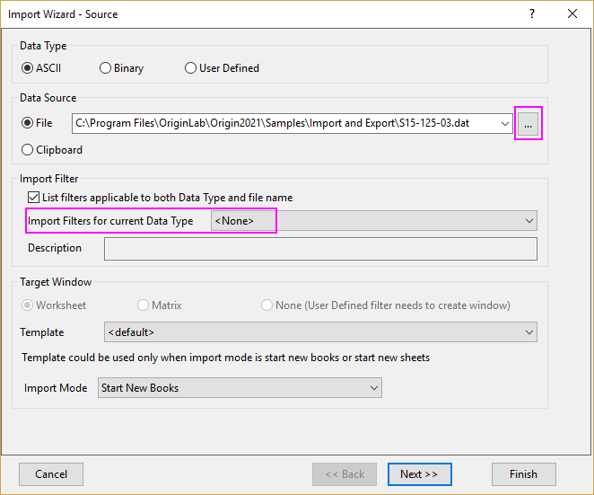
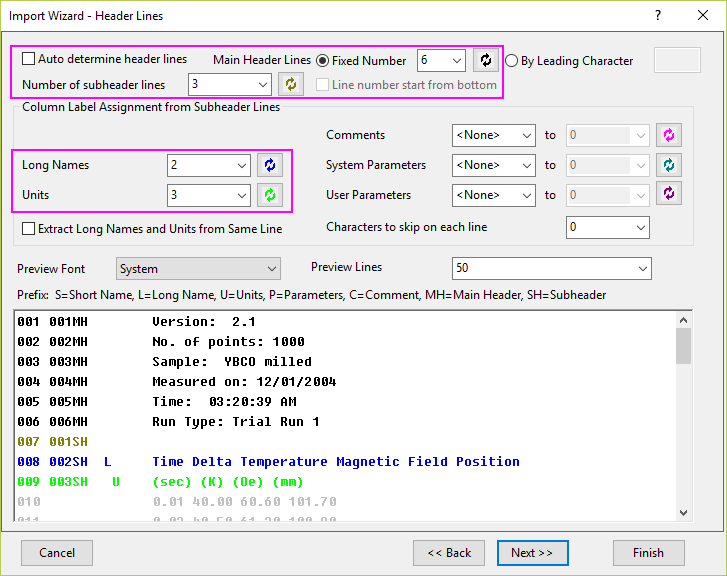
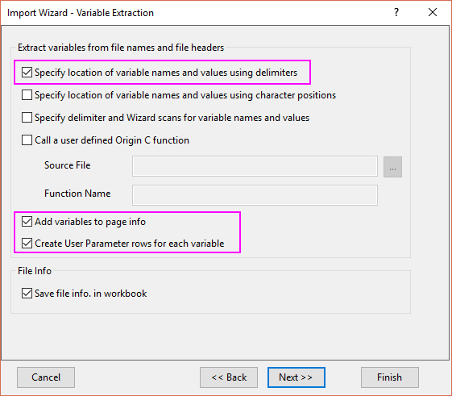
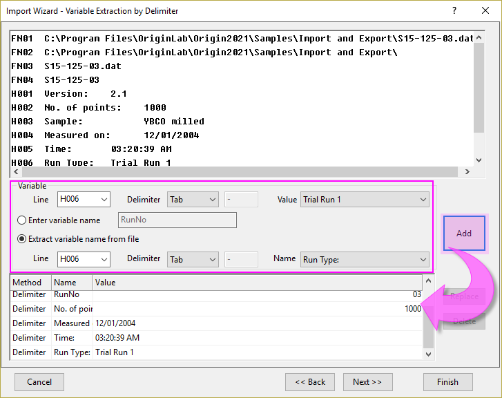
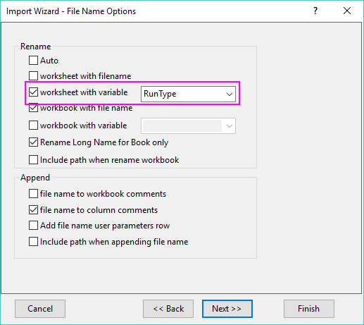
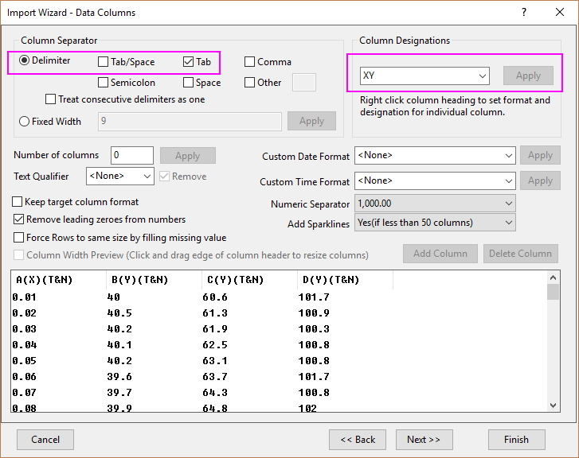
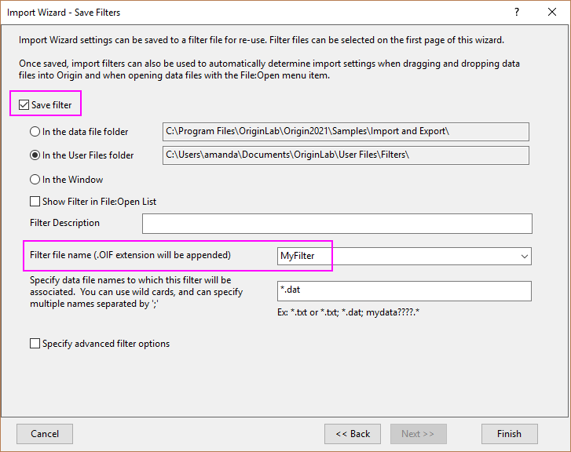
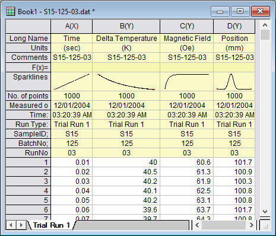
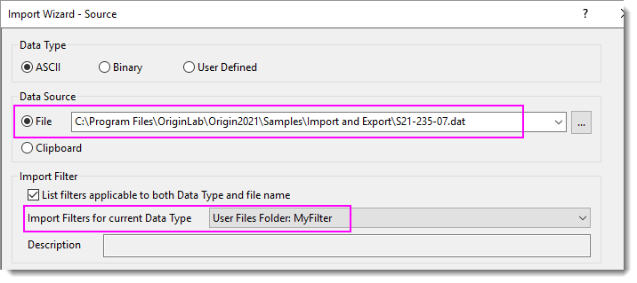

Importassistent
ImportWizard
Zusammenfassung
Der Importassistent erlaubt es Ihnen, komplizierte ASCII-Dateien zu importieren, Variablen aus dem Importdateinamen und dem Header zu extrahieren (zur Wiederverwendung in Origin), benutzerdefinierte Trennzeichen und Datumsformate festzulegen oder die Nachbearbeitung Ihrer importierten Daten mit Hilfe von LabTalk-Skript durchzuführen. Außerdem können Sie die benutzerdefinierten Einstellungen in einem Filter (.oif) speichern, der wiederholt zum Importieren der gleichen oder ähnlich strukturierten Dateien verwendet werden kann.
Was Sie lernen werden
Dieses Tutorial zeigt Ihnen, wie Sie den Importassistenten verwenden, um
- Variablen aus dem Dateinamen und -header zu extrahieren.
- Importeinstellungen zu speichern und sie für neue Daten zu verwenden.
Schritte
- Öffnen Sie eine neue Arbeitsmappe. Wählen Sie Datei: Aus Datei importieren: Importassistent, um den Dialog Importassistent zu öffnen. Klicken Sie auf die Schaltfläche Durchsuchen
 rechts neben dem Feld Datei. Navigieren Sie zu dem Ordner \Samples\Import and Export und öffnen Sie die Datei S15-125-03.dat.
rechts neben dem Feld Datei. Navigieren Sie zu dem Ordner \Samples\Import and Export und öffnen Sie die Datei S15-125-03.dat.
- 
Beachten Sie, dass ein Importfilter von VarsFromFileNameAndHeader.oif automatisch für Importfilter> Importfilter für aktuellen Datentyp ausgewählt wird. Wenn es keinen Importfilter im Datenordner gibt, wird der Filter automatisch zum Importieren der Daten verwendet. In diesem Beispiel zeigen wir Ihnen, wie Sie diese Daten Schritt für Schritt importieren und einen einen entsprechenden Filter erstellen. Wir wählen <Kein>.
Klicken Sie auf Weiter.
- Auf der Seite Headerzeilen können Sie die Arbeitsblattheader einfach benutzerdefiniert anpassen. Das untere Bedienfeld ist insbesondere nützlich, wenn Sie eine Datei mit vielen Headerzeilen, wie in diesem Beispiel, importieren möchten. Deaktivieren Sie das Kontrollkästchen Kopfzeilen automatisch bestimmen. Um die Haupheaderzeilen festzulegen, positionieren Sie den Cursor auf Zeile 6 im Vorschaufeld und klicken Sie dann auf die Schaltfläche
 neben Hauptheaderzeilen: Festgelegte Anzahl. Entsprechend legen Sie die Zeilen Langname und Einheit fest.
neben Hauptheaderzeilen: Festgelegte Anzahl. Entsprechend legen Sie die Zeilen Langname und Einheit fest.
- 
Klicken Sie auf Weiter.
- Die Seite Variablenextraktion ermöglicht Ihnen, Variablen aus Dateinamen und Dateiheadern zu extrahieren, die in der Seiteninfo gespeichert, in Spaltenheaderzeilen abgelegt oder in Anmerkungen eines Diagramms verwendet werden können. Aktivieren Sie Bestimmen Sie den Speicherort von Variablennamen und Werten unter Verwendung von Trennzeichen, Variablen zur Seiteninformation hinzufügen und Anwenderparameterzeilen für jede Variable erstellen.
- 
Klicken Sie auf Weiter.
- Auf der Seite Variablenextraktion mit Trennzeichen können Sie die Variablennamen und -werte durch spezifische Trennzeichen extrahieren. In diesem Beispiel extrahieren wir Folgendes:
- Variable in Linie FN04, Trennzeichen = Anderes: -,
-
- Wert = S15, Geben Sie den Variablennamen ein = SampleID;
- Wert = 125, Geben Sie den Variablennamen ein = BatchNo;
- Wert = 03, Geben Sie den Variablennamen ein = RunNo;
- Variable in Linie H002, Trennzeichen = Doppelpunkt, Wert = 1000, Variablennamen aus Datei extrahieren > Name = No. of points;
- Variable in Linie H004, Trennzeichen = Doppelpunkt, Wert = 12/01/2004, Variablennamen aus Datei extrahieren > Name = Measured on;
- Variable in Linie H005, Trennzeichen = Register, Wert = 03:20:39 AM, Variablennamen aus Datei extrahieren > Name = Time;
- Variable in Linie H006, Trennzeichen = Register, Wert = Trial Run 1, Variablennamen aus Datei extrahieren > Name = Run Type;
- 
Klicken Sie auf Weiter.
- Aktivieren Sie auf der Seite Dateinamenoptionen das Kontrollkästchen Arbeitsblatt mit Variable und wählen Sie in der Auswahlliste RunType, um das Arbeitsblatt mit der Variable RunType umzubenennen. Aktivieren Sie auch Langname nur für die Mappe umbenennen und Dateiname zu Spaltenkommentare.
- 
Klicken Sie auf Weiter.
- Wählen Sie auf der Seite Spalten mit Daten die Option Register unter Dateistruktur > Trennzeichen und geben Sie XY für die Zuordnung der Spalten ein. Klicken Sie auf die Schaltfläche Anwenden, um die Datenspalten in der Vorschau unten zu prüfen.
- 
- Klicken Sie 2x auf Weiter, um zur Seite Filter speichern zu gelangen. Um diese Einstellungen erneut zu verwenden, können Sie diesen Importprozess als Filter speichern. Aktivieren Sie das Kontrollkästchen Filter speichern und vergeben Sie einen Filternamen im Feld Dateiname Filter (MeinFilter in diesem Beispiel).

Klicken Sie auf Fertigstellen, um die Datei zu importieren.
- 
- Öffnen Sie den Dialog Importassistent erneut. Wählen Sie dieses mal die Datei <Origin-Verzeichnis>\Samples\Import and Export\S21-235-07.dat. Sie können den Filter MeinFilter auswählen, den Sie soeben unter Importfilter für aktuellen Datentyp gespeichert haben.

Klicken Sie direkt auf die Schaltfläche Fertigstellen. Es werden die Einstellungen in MeinFilter zum Importieren der Datei verwendet.